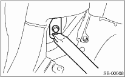
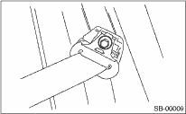
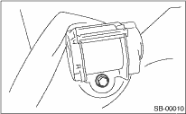
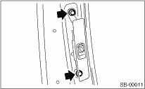
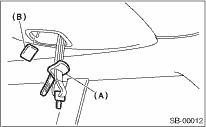
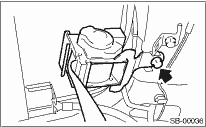
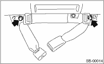

1. Remove the luggage floor mat. 
2. Remove the rear seat.
3. Remove the rear quarter trim.
4. Remove the seat belt lower anchor bolt.

5. Remove the anchor cover. Remove the two bolts, and then remove the shoulder anchor from the pillar.

6. Remove the rear quarter trim.
7. Remove the bolts, and then detach the outer belt side.

8. Remove the two bolts to remove the adjustable anchor assembly.

1. Remove the anchor cover. Remove the bolt, and then remove the shoulder anchor from the pillar.
2. Remove the strut cap.
3. Remove the rear rail trim.
4. Remove the rear pillar upper trim.
5. Remove the rear skirt trim.
6. Remove the rear quarter lower trim.
7. Remove the snap lock carefully, and then remove the cover (B). Pull the outer seat belt center tongue (A) from the hole to one side of the trim.

8. Remove the clips, and then hang the roof trim back end from the roof.
9. Disconnect the harness and connectors, and then remove the outer seat belt center assembly.

1. Remove the rear cushion.
2. Remove the bolt, and then detach the inner belt.
